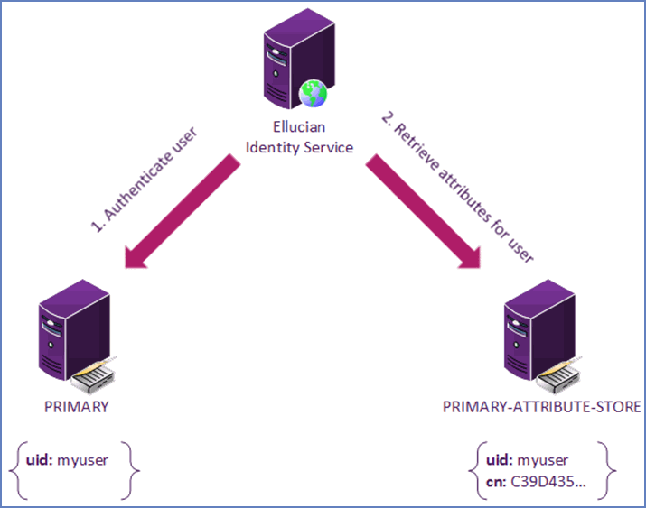

About Ellucian Ethos Identity
Ellucian Ethos Identity is an enterprise middleware solution for institutions seeking to implement, simplify, or improve an identity and access management infrastructure.
It is based on the WSO2 Identity Server product, which Ellucian has enhanced to address specific needs of higher education.
Ellucian Ethos Identity 7.0.0 is based on WSO2 Identity Server 7.0.0.
Features
Ellucian Ethos Identity provides several key features.
Ellucian Ethos Identity 7.0.0 features
- Refreshing Look and Feel for the Console UI
- HYPR for Passwordless and Biometric Authentication
- User-portal, now become MyAccount portal
- Management console is now become console as new look and feel
- Email and SMS OTP for Passwordless Login.
- WSO2 platform upgrade - 7.0.0
- Functional enhancements
- Security updates
- Bug fixes
- Upgraded Ellucian Ethos Identity Installer
- Migration support from Ellucian Ethos Identity 5.10.10
- Oracle 19c support
Architecture
Ellucian Ethos Identity is a self-contained Java application that includes an embedded instance of Apache Tomcat. You can run it on Windows, Linux or UNIX.
The application includes an authentication endpoint, LDAP integration, and database integration. The authentication endpoint leverages LDAP for authentication against a user store and a database for sessions and settings. The LDAP integration is configured against an existing directory server that contains users and identity attributes for the institution. The database integration leverages JDBC for access to many industry standard databases, including Oracle and SQL Server.
For more information about the software architecture, including major sub-systems and process flows, refer to Architecture on the WSO2 documentation website for the corresponding WSO2 version.
New MyAccount
The new WSO2 Identity Server user portal consists of many new components through which users can manage their user account-related preferences with more convenience.
The new user portal features are as follows:
- User profile management
- Linked accounts
- Export user profile
- Reset password
- Account recovery
- Multi-factor authentication
- Monitor active user sessions
Identity management for Ethos Identity
Ellucian Ethos Identity supports some of the identity management features of WSO2 Identity Server.
The following table lists the identity management features of WSO2 Identity Server that are supported by Ellucian Ethos Identity and provides a link to the WSO2 documentation for those features.
| Feature | WSO2 documentation page |
|---|---|
| Password recovery | Refer to Password recovery for users on the WSO2 documentation website for the corresponding WSO2 version. |
| Username recovery | Refer to Username Recovery on the WSO2 documentation website for the corresponding WSO2 version. |
| Password change | Refer to Change password on the WSO2 documentation website for the corresponding WSO2 version. |
| Forced password reset by administrator | Refer to Admin initiated password reset on the WSO2 documentation website for the corresponding WSO2 version. |
| Password history | Refer to Password history count on the WSO2 documentation website for the corresponding WSO2 version. |
| Password complexity | Refer to Password validation on the WSO2 documentation website for the corresponding WSO2 version. |
| User account locking | Refer to Account configurations on the WSO2 documentation website for the corresponding WSO2 version. |
| User account disabling | Refer to Account configurations on the WSO2 documentation website for the corresponding WSO2 version. |
| User account suspension | Refer to Account configurations on the WSO2 documentation website for the corresponding WSO2 version. |
| ReCAPTCHA feature | Refer to Bot detection on the WSO2 documentation website for the corresponding WSO2 version. |
| Time-Based One Time Password (TOTP) | Refer to Enroll TOTP via My Account on the WSO2 documentation website for the corresponding WSO2 version. |
| SMS One Time Password (OTP) | Refer to Add MFA with SMS OTP on the WSO2 documentation website for the corresponding WSO2 version. |
| EMAIL One Time Password (OTP) | Refer to Add MFA with Email OTP on the WSO2 documentation website for the corresponding WSO2 version. |
WSO2 documentation
WSO2 provides its own set of comprehensive documentation. Ellucian recommends that you reference that documentation as you work with Ellucian Ethos Identity.
You can access the WSO2 documentation from the WSO2 website for the corresponding WSO2 version from:
WSO2 Identity Server Documentation.
About Ethos Identity secondary user stores
Secondary user stores support scenarios that benefit from multiple user stores.
Ellucian Ethos Identity supports a primary user store that you configured during installation. In addition to the primary user store, Ellucian Ethos Identity also supports scenarios with multiple user stores, such as multiple authentication user stores or attribute stores. Anything outside of the primary user store is a secondary user store.
These topics describe the use of secondary user stores in Ellucian Ethos Identity. For the setup procedures, see Secondary user store configuration for Ethos Identity.
For more information about other configuration options for service providers, refer to Configuring Secondary User Stores on the WSO2 documentation website for the corresponding WSO2 version.
Multiple authentication user stores
In this scenario, there are multiple directory servers for authentication. For example, Banner customer user store or Colleague staff or student user store can be configured for an admin user that exists only in the customer user store LDAP.
As shown in the following image, this admin user does not exist in the primary user store (PRIMARY). Ellucian Identity Service must authenticate against a secondary user store (customer user store). The domain name is configured on the secondary user store.
banner will look like BANNER\myuser. The domain name is always uppercase when displayed or referenced. The Domain Name is excluded from the CAS protocol implementation, but appears in the SAML 2.0 protocol implementation.Attribute stores
In this scenario, one directory server provides authentication and another directory server provides identity attributes. For example, Banner customer attribute store or Colleague staff or student attribute store could be configured to authenticate against Microsoft Active Directory and retrieve identity attributes from the customer attribute store LDAP.
As shown in the following image, the user authenticates against the primary user store (PRIMARY) and retrieves identity attributes from a secondary user store (PRIMARY-ATTRIBUTE-STORE). The domain name PRIMARYATTRIBUTE- STORE is configured on the secondary user store and follows the convention of <User Store Domain Name>-ATTRIBUTE-STORE.

In addition to serving attributes, the attribute store can also provide fail-over authentication and support the previous customer attribute store administration user scenario.
Performance considerations for multiple user stores
Large LDAP directories can contribute to slow performance during search operations. If users are spread across multiple contexts, split the user stores accordingly.
Scenario 1: users in multiple contexts
Consider this scenario when users are spread across multiple contexts.
At school.edu, the top-level domain in the directory server, ad.school.edu, is DC=school,DC=edu and there are three contexts for students, faculty, and staff. The students context is the largest group of user objects and is accessed most often. In a standard configuration, the primary user store points to the top-level domain for LDAP search and queries all objects at or below that scope. LDAP search operations at this level are very slow for all logins because of the large number of objects they are comparing.
Because the students context is the largest and most frequently accessed, the primary user store, configured in EIS_HOME/config/eis_config.properties, can use that User Search Base for more precise search operations, for example, CN=students,DC=school,DC=edu. This also means that the faculty and staff contexts must be set up as secondary user stores as shown in the following table. Splitting the search operations against smaller scopes improves performance.
| User Store | Domain Name | User Search Base |
|---|---|---|
| Primary User Store | PRIMARY | CN=students,DC=school,DC=edu |
| Faculty User Store | FACULTY | CN=faculty,DC=school,DC=edu |
| Staff User Store | STAFF | CN=staff,DC=school,DC=edu |
Scenario 2: users and attributes in multiple contexts
Building on Scenario 1, there could also be attribute stores that must be aggregated for various applications.
Ellucian Ethos Identity permits a 1-to-1 mapping from an attribute store to a primary or secondary user store using a Domain Name pattern such as: <User Store Domain Name>-ATTRIBUTE-STORE
The attribute stores are located on a different server and each is associated to a defined primary or secondary user store as shown in the following table.
| User Store | Domain Name | LDAP Server | User Search Base |
|---|---|---|---|
| Primary User Store | PRIMARY | ad.school.edu | CN=students,DC=school,DC=edu |
| Primary Attribute Store | PRIMARY-ATTRIBUTE-STORE | domain.school.edu | ou=people,o=cp |
| Faculty User Store | FACULTY | ad.school.edu | CN=faculty,DC=school,DC=edu |
| Faculty Attribute Store | FACULTY-ATTRIBUTE-STORE | domain.school.edu | ou=people,o=cp |
| Staff User Store | STAFF | ad.school.edu | CN=staff,DC=school,DC=edu |
| Staff Attribute Store | STAFF-ATTRIBUTE-STORE | domain.school.edu | ou=admin,o=cp |
Moving user DN prevents login/authentication
Ellucian Identity Service uses caching to achieve better authentication performance. The caching process is enabled by default and you cannot disable it. When the system authenticates a user, the username and user DN are cached.
If the user account is moved within the directory server to a separate OU, the next authentication attempt by the user will fail because the DN no longer matches what was cached. After the first authentication fails, the next authentication attempt will be successful. The user's new DN will be cached so that all subsequent authentication attempts will be successful.